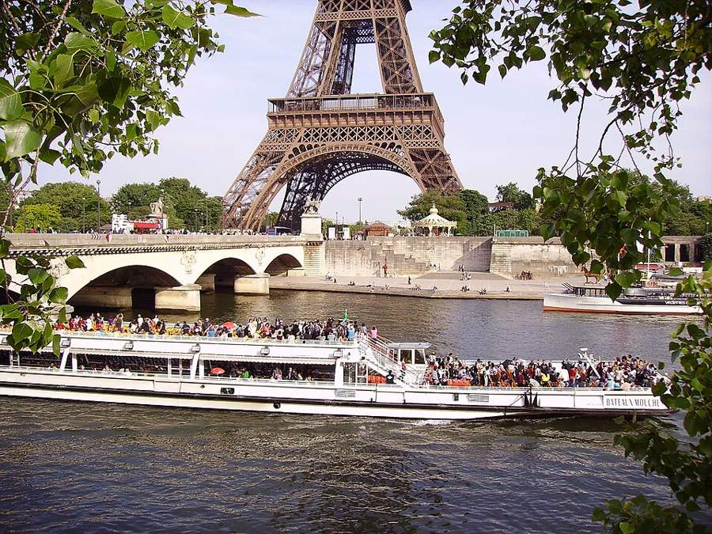
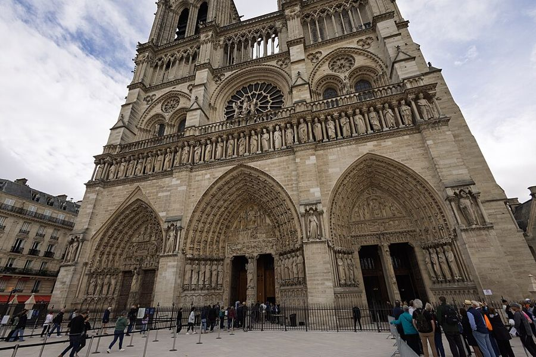
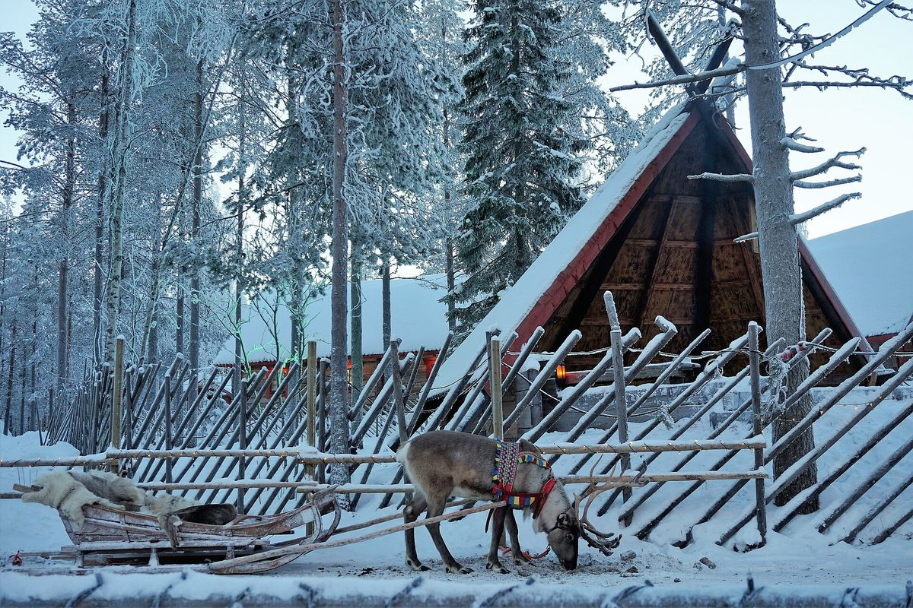
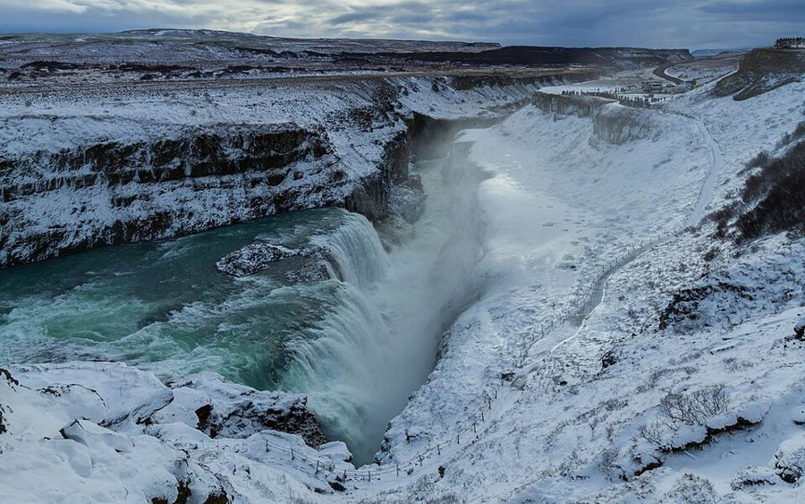
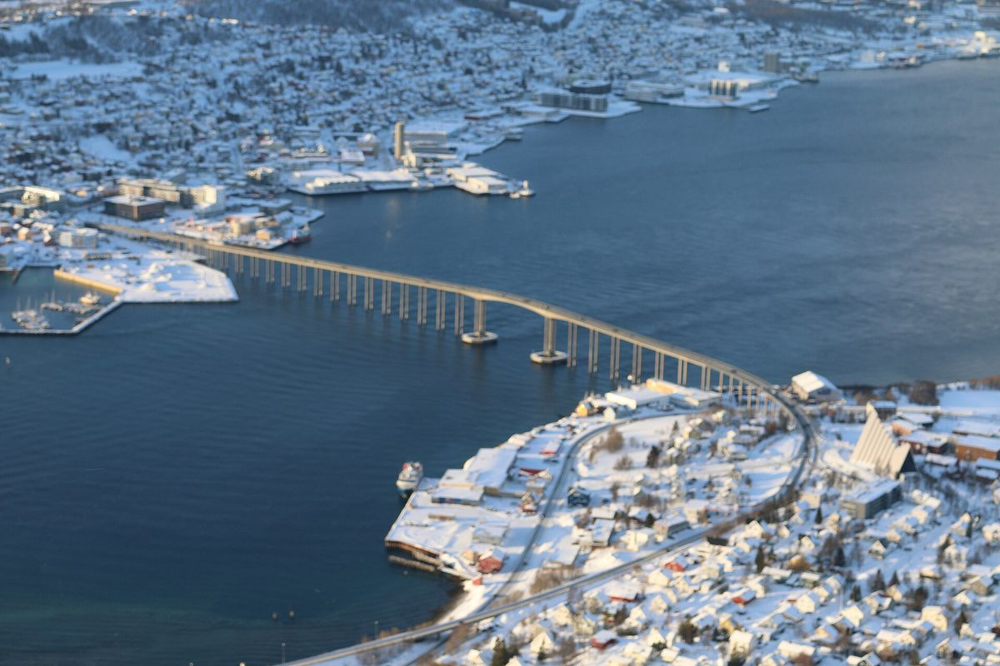
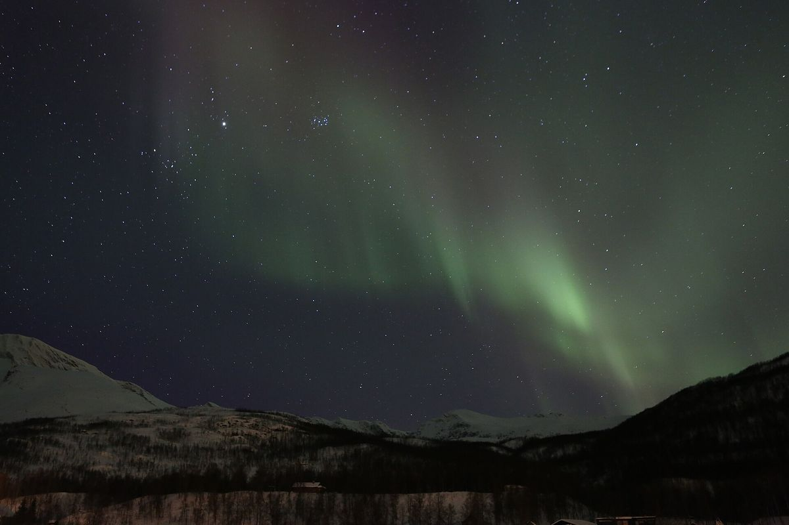
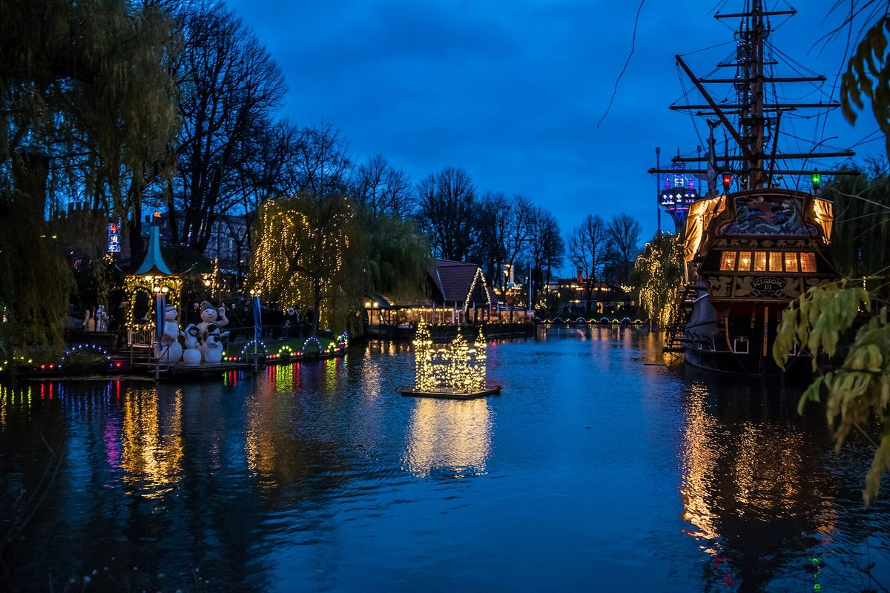
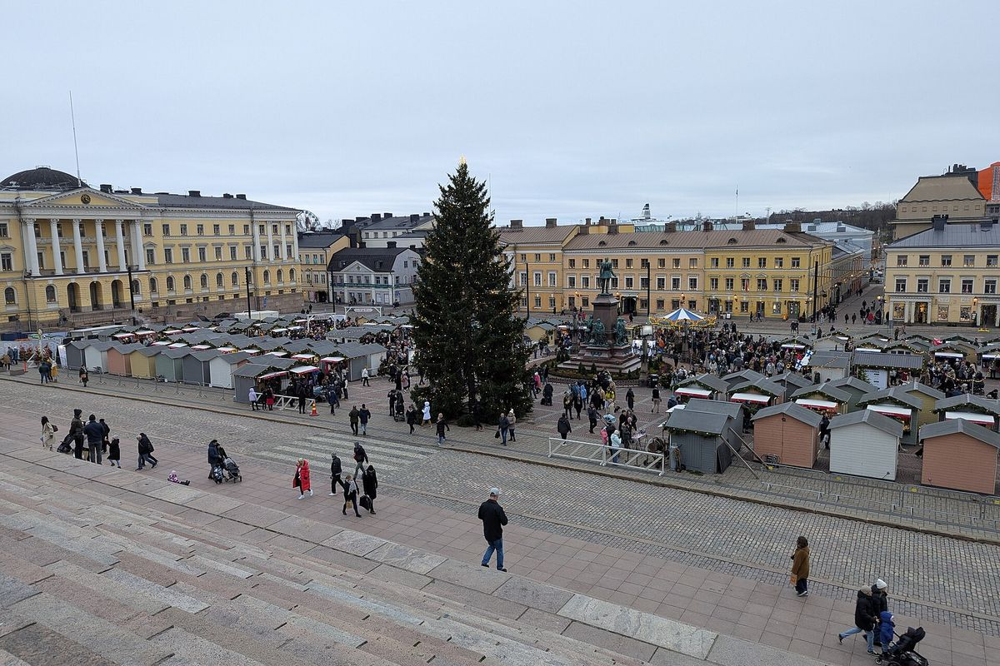
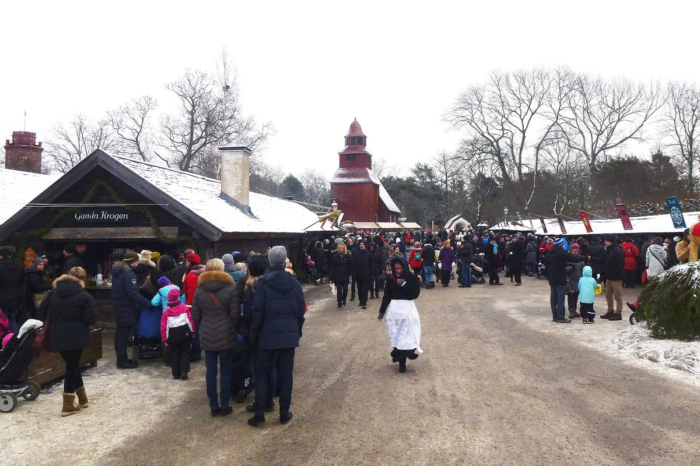
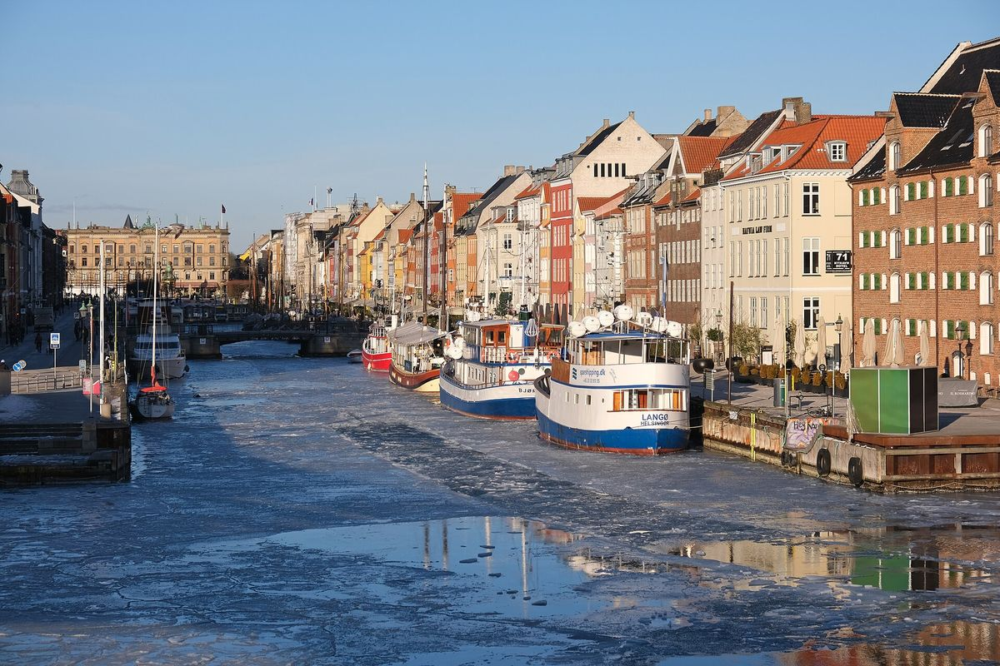

The Paris block, in every combo
Short and sweet: 2 nights at the start, 1 night at a CDG hotel at the end. Everything north fills the 18 nights in between.




- Thu 10 Dec: land 13:15 (QR39), taxi in, check in near the Eiffel Tower / 7th. Evening: Champs-Élysées Christmas lights walk up to the Arc de Triomphe rooftop (€16 adults, under-18s free; lift out of service, 284 stairs).
- Fri 11 Dec: morning Notre-Dame (free; reserve a free time slot on notredamedeparis.fr on the day, because slots are released only a few hours ahead). Afternoon Eiffel Tower summit by lift (€36.70 adult, €9.20 child 4–11). Dusk 1-hour Seine cruise from the foot of the tower (Bateaux Parisiens, €18 adult / €9 child online, ≈ $87 for 4).
- Sat 12 Dec: fly north. Wed 30 Dec: fly back to CDG and sleep at an airport hotel. Thu 31 Dec QR40 at 15:15.
- Paris block cost: $1,560 / $2,270 / $3,060 (lodging $1,200, sights + cruise $350, food $510, taxis $210). The old plan had 7 Paris/CDG nights costing ~$5.1k, so this frees ~$2.8k for the north.
- Option (1+1 split): 1 night at the start + 1 central night at the end (fly back 29 Dec) also works, but you'd see the sights jet-lagged on day one. 2+1 is recommended.
Compare (AUD, whole family, excl. Qatar flights)
| Combo (21 nights) | Low | Likely | High | Likely with levers | vs old $19.3k | Fits $15k? |
|---|---|---|---|---|---|---|
| 1. Santa + Iceland | $16.2k | $24.5k | $33.9k | $19.5k | +$5.2k | ❌ no |
| 2. All Iceland | $12.9k | $19.9k | $28.5k | $15.2k | +$0.6k | 🟡 with levers |
| 3. Santa + Helsinki + overnight ferry + Stockholm | $12.1k | $17.6k | $24.6k | $14.9k | −$1.7k | 🟡 with levers |
| 4. Tromsø + Copenhagen | $13.2k | $20.3k | $26.8k | $18.3k | +$1.0k | ❌ no |
| 5. Nordic capitals: Helsinki + ferry + Stockholm + Copenhagen | $9.8k | $14.4k | $19.7k | $13.6k | −$4.9k | ✅ yes |
| Old plan: Paris 4 · Alps 6 · Iceland 8 · Paris 2 · CDG 1 (Alps now removed) | $13.8k | $19.3k | $27.2k | – | – | – |
Bottom line: with Paris short, 5 (Nordic capitals) fits as-is. 3 (Santa + Helsinki + ferry + Stockholm) reaches ~$14.9k with levers and is the best mix if Santa matters. 2 (All Iceland) gets to ~$15.2k with levers. 1 and 4 stay above budget.
1. Santa + Iceland
The "dream" version · most expensive



Why this route
- Order: Lapland first (12–17 Dec) because Rovaniemi beds cost about 1.8× more from 21 Dec (same apartment $420 → $642 a night). Iceland takes Christmas because it has cabins and the price rise is smaller.
- Flights: there is no direct Rovaniemi–Iceland flight, so this leg goes via Helsinki (very early or overnight). That makes three intra-Europe flights, about $5.2k likely.
- Vík: stay off the south coast over 22–25 Dec. Only 6 properties rated 8+ had space, from $677 a night. Visit the waterfalls as day trips from Selfoss/Hella.
- Daylight / cold: Rovaniemi ≈ 2–3 h of sun, ~−10 °C. Iceland ≈ 4 h, ~0 °C, windy.
- Travel days lost: 3 (12, 17 and 30 Dec), and the 17th is a long day.
- Kids get: Santa, huskies, reindeer, snow, then waterfalls, geysers, hot pools and a real chance of aurora.
Where the money goes (likely)
- Lodging $8,620 (35%)
- Flights in Europe $5,150 (21%)
- Activities & sights $3,740 (15%)
- Food, car, transfers $6,980 (28%)
Day by day
- Thu 10 – Sat 12 DecParis 2 nights
The Paris block (below) - Sat 12 DecFly CDG → Rovaniemi travel
easyJet non-stop 07:00–11:40 (~$2,020) or Air France/Finnair via HEL ($1,928) - Sat 12 – Thu 17 DecRovaniemi, Lapland 5 nights
Santa Claus Village (free), reindeer sleigh, husky ride, SantaPark - Thu 17 DecFly Rovaniemi → Keflavík via Helsinki travel
Finnair, from $1,210 (overnight layover) / $1,258 (05:20–09:15) - Thu 17 – Wed 30 DecIceland (Reykjavík 3 · Selfoss/Hella cabin 7 incl. Christmas · Reykjavík 3) 13 nights
Golden Circle, Gullfoss, Seljalandsfoss/Skógafoss, aurora, pools, Perlan - Wed 30 DecFly Keflavík → CDG travel
Icelandair non-stop 07:30–12:00 ($1,625) or Transavia/AF 1-stop ($1,438) - Wed 30 – Thu 31 DecCDG airport hotel 1 night
Qatar QR40 departs 15:15 on 31 Dec
Levers to get closer to $15k
- Ryanair Beauvais→Rovaniemi Sun 13 Dec ($937 + bags + bus), Paris 3 nights / Lapland 4 −$1,000
- Fly home Tue 29 Dec easyJet KEF→CDG $911 non-stop (+bags) and take 2 CDG nights −$800
- Short husky ride + 400 m reindeer instead of Bearhill Happy Trail −$850
- Basic Iceland car cover, cheapest-quartile lodging, self-cater −$2,300
Likely $24.5k → about $19.5k with all of these.
2. All Iceland
Cheapest flights · one car, slow pace


Why this route
- Order: the remote areas (Snæfellsnes, Vík) come first while there is still choice. Vík over 22–25 Dec has only 6 properties rated 8+, from $677. Christmas is spent in one cabin near Selfoss, where shops and pools are closest when Iceland shuts down on 24–26 Dec.
- Flights: only 2 intra-Europe flights, and easyJet CDG→KEF is $489 for all four (bags extra). This is the cheapest way north.
- Where the money goes: Iceland itself, not flights. The car with cover is ~$175 a day and food ~$200 a day.
- Daylight / cold: about 4–4.5 h of daylight, ~0 °C. Wind and ice make driving slow. Plan one sight a day.
- Travel days lost: 2 flight days, plus 3 base moves by car.
- Kids get: waterfalls, geysers, black-sand beaches, hot pools every day, lava show, the best aurora odds. No Santa.
Where the money goes (likely)
- Lodging $7,680 (39%)
- Flights in Europe $2,250 (11%)
- Activities & sights $2,050 (10%)
- Food, car, transfers $7,950 (40%)
Day by day
- Thu 10 – Sat 12 DecParis 2 nights
The Paris block - Sat 12 DecFly CDG → Keflavík travel
easyJet non-stop 14:45–17:35, $489 for 4 (+ bags); "prices currently low" - Sat 12 – Tue 15 DecReykjavík 3 nights
Hallgrímskirkja, Perlan, pools - Tue 15 – Thu 17 DecSnæfellsnes (Grundarfjörður) 2 nights
Kirkjufell, black churches, lava fields - Thu 17 – Sat 19 DecVík 2 nights
Reynisfjara, Dyrhólaey, Skógafoss (all before the Christmas squeeze) - Sat 19 – Sun 27 DecSelfoss / Hella, one cabin 8 nights
Golden Circle, Friðheimar, pools, Christmas in a cabin with a kitchen - Sun 27 – Wed 30 DecReykjavík 3 nights
Lava Show, Sky Lagoon / pools, aurora tour - Wed 30 DecFly Keflavík → CDG travel
Icelandair non-stop $1,625, or 1-stop from $1,181 - Wed 30 – Thu 31 DecCDG airport hotel 1 night
QR40 15:15
Levers to get closer to $15k
- Fly home Tue 29 Dec easyJet KEF→CDG $911 (+bags), 2 CDG nights −$800
- One 7+ night self-catering cabin near Selfoss/Hella (weekly rate) instead of moving bases −$1,300
- Basic car cover instead of gravel/tyre cover −$1,000
- Self-cater most dinners (supermarkets: Bónus/Krónan) −$900
- Pick 3 paid activities instead of 6 (pools + Perlan + one aurora tour) −$700
Likely $19.9k → about $15.2k with all of these.
3. Santa + Helsinki + overnight ferry + Stockholm
Best mix of snow, Santa and Christmas cities


Why this route
- Order: Lapland before 21 Dec, when prices jump about 1.8×. Then south through cheaper cities over Christmas. Stockholm beds are about $167 a night against Rovaniemi ~$495.
- The ferry replaces a flight and a hotel night. Cabins are sold per cabin, from about €36–74 advertised. Budget ~$450 including the dinner buffet (estimate).
- Catch: Skansen's Christmas market ends 20 Dec, so this order misses it. Combo 5 catches it. Helsinki's Senate Square market usually runs to about 21 Dec (verify the 2026 dates).
- Daylight / cold: Rovaniemi ≈ 2–3 h, −10 °C. Helsinki and Stockholm ≈ 6 h, around 0 °C.
- Travel days lost: 3 (12, 17 evening and 30 Dec). The ferry is a fun night, not a lost day.
- Kids get: Santa, huskies and reindeer, then a ship night, the Vasa warship, Junibacken (Pippi/Astrid Lindgren) and city Christmas.
Where the money goes (likely)
- Lodging $6,030 (34%)
- Flights in Europe $4,100 (23%)
- Activities & sights $3,090 (18%)
- Food, car, transfers $4,360 (25%)
Day by day
- Thu 10 – Sat 12 DecParis 2 nights
The Paris block - Sat 12 DecFly CDG → Rovaniemi travel
easyJet non-stop 07:00–11:40 (~$2,020) - Sat 12 – Thu 17 DecRovaniemi 5 nights
Santa, huskies, reindeer, SantaPark - Thu 17 DecFly Rovaniemi → Helsinki travel
Finnair non-stop 21:45–23:05, $346 for 4 (or the VR overnight train) - Thu 17 – Mon 21 DecHelsinki 4 nights
Senate Square Christmas market, Suomenlinna by ferry, Allas sea pool - Mon 21 – Tue 22 DecViking Line ferry to Stockholm 1 night on board
Family cabin, buffet dinner, sail through the archipelago at sunrise - Tue 22 – Wed 30 DecStockholm 8 nights
Gamla stan, Vasa Museum, Junibacken, Skansen, Swedish Christmas - Wed 30 DecFly Stockholm → CDG travel
Finnair 1-stop $1,179 or Air France non-stop $1,477 - Wed 30 – Thu 31 DecCDG airport hotel 1 night
QR40 15:15
Levers to get closer to $15k
- Ryanair Beauvais→Rovaniemi Sun 13 Dec, Paris 3 / Lapland 4 −$1,000
- Short husky ride + 400 m reindeer instead of Happy Trail −$850
- Fly home Tue 29 Dec ARN→CDG $847 (1 stop), 2 CDG nights −$150
- Self-catering apartment in Rovaniemi ($362–375) and Stockholm (ApartDirect ~$126) −$650
Likely $17.6k → about $14.9k with all of these.
4. Tromsø + Copenhagen
Fjords and aurora, then Tivoli Christmas



Why this route
- Order: Tromsø first. Its activity high season starts 12 Dec, and lodging is about $457 a night mid-Dec against ~$705 over 21–26 Dec. Copenhagen takes Christmas.
- Polar night: the sun does not rise in Tromsø in mid-December. You get 3–4 h of blue twilight and the best aurora odds of any option.
- Where the money goes: Tromsø activities are pricey. A family husky ride is NOK 10,170 (~$1,420) and reindeer adds ~$990. Norway food is the dearest in this plan.
- Copenhagen for 13 nights is long: swap 5 nights for Stockholm by train to save ~$500.
- Daylight / cold: Tromsø ~−3 °C, no sun. Copenhagen ≈ 7 h, +2 °C, grey.
- Travel days lost: 3.
- Kids get: husky sledding, reindeer feeding, fjords, aurora, then Tivoli rides, Christmas fireworks and LEGO-land Denmark vibes.
Where the money goes (likely)
- Lodging $7,660 (38%)
- Flights in Europe $3,900 (19%)
- Activities & sights $3,710 (18%)
- Food, car, transfers $5,010 (25%)
Day by day
- Thu 10 – Sat 12 DecParis 2 nights
The Paris block - Sat 12 DecFly CDG → Tromsø travel
Air France non-stop 10:00–14:00, $1,725 for 4 - Sat 12 – Thu 17 DecTromsø 5 nights
Husky sled, Sámi reindeer camp, Fjellheisen cable car, aurora - Thu 17 DecFly Tromsø → Copenhagen travel
Norwegian non-stop 19:00–21:35, $549 for 4 - Thu 17 – Wed 30 DecCopenhagen 13 nights
Tivoli (closed 24 Dec; fireworks 25 and 26 Dec), Nyhavn, day trips to Malmö / Helsingør - Wed 30 DecFly Copenhagen → CDG travel
LOT 1-stop $1,089 or Air France non-stop $1,474 - Wed 30 – Thu 31 DecCDG airport hotel 1 night
QR40 15:15
Levers to get closer to $15k
- Husky afternoon ride (NOK 2,990/1,495) instead of morning; skip paid aurora bus, use cable car at night −$800
- Copenhagen 13 → swap 5 nights for Stockholm (cheaper beds) via train −$500
- Fly home Tue 29 Dec CPH→CDG $663, 2 CDG nights −$150
- Self-cater in Tromsø apartment (Norway restaurant prices are high) −$500
Likely $20.3k → about $18.3k with all of these.
5. Nordic capitals: Helsinki + ferry + Stockholm + Copenhagen
Only option under $15k as-is · no Lapland



Why this route
- Order: Helsinki → ship → Stockholm reaches Skansen's last market weekend (18–20 Dec). Copenhagen takes Christmas because Tivoli reopens on the 25th with fireworks.
- Cheapest beds: Helsinki ~$140, Stockholm ~$167, Copenhagen ~$321 a night. Only two flights. The ship and train are part of the fun.
- What you give up: no guaranteed snow, no Santa/huskies, no aurora. Add a 2-night Rovaniemi hop from Helsinki (~$2–2.5k) if the kids must meet Santa.
- Daylight / cold: about 6–7 h, −2 to +3 °C. City-friendly.
- Travel days lost: 2 flight days plus half a day on the train.
- Kids get: Christmas markets, a ship night, the Vasa warship, Junibacken, Tivoli rides and fireworks.
Where the money goes (likely)
- Lodging $5,460 (38%)
- Flights in Europe $2,720 (19%)
- Activities & sights $1,650 (11%)
- Food, car, transfers $4,520 (31%)
Day by day
- Thu 10 – Sat 12 DecParis 2 nights
The Paris block - Sat 12 DecFly CDG → Helsinki travel
Finnair non-stop 19:00–22:55 ($825) or KLM 1-stop ($706) - Sat 12 – Wed 16 DecHelsinki 4 nights
Senate Square Christmas market, Suomenlinna, Allas sea pool, Linnanmäki/Heureka - Wed 16 – Thu 17 DecViking Line ferry to Stockholm 1 night on board
Family cabin + buffet - Thu 17 – Wed 23 DecStockholm 6 nights
Skansen Christmas market (last weekend 18–20 Dec), Vasa, Junibacken, Gamla stan - Wed 23 DecTrain Stockholm → Copenhagen travel
SJ, about 5 h. Fare is an estimate; book on sj.se - Wed 23 – Wed 30 DecCopenhagen 7 nights
Tivoli Christmas (closed 24 Dec; fireworks 25 and 26 Dec), Nyhavn, Round Tower - Wed 30 DecFly Copenhagen → CDG travel
LOT 1-stop $1,089 / AF non-stop $1,474 (29 Dec: $663) - Wed 30 – Thu 31 DecCDG airport hotel 1 night
QR40 15:15
Levers to get closer to $15k
- Fly home Tue 29 Dec CPH→CDG $663, 2 CDG nights −$150
- Self-catering apartments throughout −$600
Likely $14.4k → about $13.6k with all of these.
Building blocks (swap-in costs)
Paris (fixed)
Beds for 4 (min / median / upper quartile, rated 8+): ~$360 a night (2 nights) + CDG hotel ~$485
☀ 8.5 h · 🌡 +5 °C (typical mid-Dec)
Eiffel Tower, Arc de Triomphe, Champs-Élysées lights, Seine cruise, Notre-Dame
Rovaniemi, Lapland
Beds for 4 (min / median / upper quartile, rated 8+): $362 / $495 / $516 (12–17 Dec); ~$860 at Christmas
☀ 2–3 h · 🌡 −10 °C (typical mid-Dec)
Santa Claus Village (free), reindeer €140–200/family, Bearhill husky €668/family
Tromsø, Norway
Beds for 4 (min / median / upper quartile, rated 8+): $350 / $457 / $502 (12–17 Dec); ~$705 at Christmas
☀ 0 h sun (polar night) · 🌡 −3 °C (typical mid-Dec)
Husky NOK 10,170/family, reindeer NOK 6,270–7,050, cable car NOK 1,360
Iceland
Beds for 4 (min / median / upper quartile, rated 8+): Reykjavík $213 / $343; Selfoss Christmas median $459
☀ 4 h · 🌡 0 °C (typical mid-Dec)
Car ~$175/day incl. cover; pools, Golden Circle, waterfalls, aurora
Helsinki
Beds for 4 (min / median / upper quartile, rated 8+): $106 / $140 / $146
☀ 6 h · 🌡 −2 °C (typical mid-Dec)
Christmas market, Suomenlinna ferry (public transport ticket)
Viking Line ferry
Beds for 4 (min / median / upper quartile, rated 8+): From €36–74 per cabin advertised; budget ~$450 incl. buffet (est.)
☀ – · 🌡 – (typical mid-Dec)
Overnight Helsinki ⇄ Stockholm

Stockholm
Beds for 4 (min / median / upper quartile, rated 8+): $126 / $167 / $189
☀ 6 h · 🌡 0 °C (typical mid-Dec)
Skansen market to 20 Dec (kids 0–15 free), Vasa, Junibacken
Copenhagen
Beds for 4 (min / median / upper quartile, rated 8+): $209 / $321 / $346
☀ 7 h · 🌡 +2 °C (typical mid-Dec)
Tivoli entry DKK 160 (8+) / 80 (3–7); closed 24 Dec
Sources & method
- Flights: Google Flights (AUD, 4 passengers, one way, as displayed 20 Oct 2026 ~22:45 Sydney time). Bags are not in low-cost fares; likely figures add ~$130–200 per flight. Prices change daily.
- Lodging: Booking.com searches for 2 adults + 2 kids (7 and 9), rated 8+, sorted by price. Figures are the cheapest 25 (min / median / upper quartile). Real stays usually sit a bit above the median.
- Official prices: Eiffel Tower · Bateaux Parisiens · Notre-Dame free booking · Arc de Triomphe · Santa Claus Reindeer · Bearhill Husky · SantaPark · Tromsø Villmarkssenter · Tromsø Arctic Reindeer · Fjellheisen · Viking Line · Tivoli · Skansen
- Estimates (marked): food per day, taxis, Iceland car cover and fuel, aurora tours, ferry cabin + buffet, SJ train fare, city activity budgets, daylight and temperature (typical values). FX: €1 = $1.62, NOK 1 = $0.14, DKK 1 = $0.217.
- Nothing is booked or held.
Photos (Wikimedia Commons): arc: Wilfredor (CC0) · aurora: Francisco Diez from Toronto, Canada (CC BY 2.0) · champs: photo by Didier Boy de la Tour copyright ACT lighting design 20011 (CC BY 3.0) · eiffel: Getfunky Paris (CC BY 2.0) · ferry: AleWi (CC BY-SA 4.0) · gullfoss: Pierre-Selim Huard (CC BY 4.0) · helsinki: AleWi (CC BY-SA 4.0) · hero_rey1: Andreas Tille (CC BY-SA 3.0) · lapland: fox jia foxjeef (CC0) · notredame: The wub (CC BY-SA 4.0) · nyhavn: kallerna (CC BY-SA 4.0) · reindeer: Alyunina (CC BY 4.0) · seine: Jean-Pierre (CC BY-SA 2.0) · skansen: Holger.Ellgaard (CC BY-SA 3.0) · skogafoss: Martyn Smith (CC BY 2.0) · stockholm: Arild Vågen (CC BY-SA 3.0) · tivoli: Susanne Nilsson (CC BY-SA 2.0) · tromso: Sparrow (麻雀) (CC BY-SA 4.0) · tromso_aurora: Alchemist-hp (talk) (FAL) · vasa: Steven Lek (CC BY-SA 4.0)


.jpg){kind=link}


.jpg){kind=link}


.jpg){kind=link}